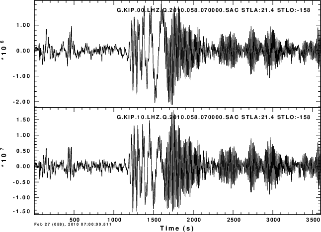

Access to European data from GEOFON is made through the python
program fdsnws_fetch. This program will permit one to
download waveforms in miniSEED and response information in FDSN
Station XML. However the current fdsnws_fetch does
not permit a waveform download based on an annular geographical
region.
To get everything installed correctly, one needs to look at a
number of webpages:
1. You must have python installed
2. The python installation must have the pip command
https://pip.pypa.io/en/stable/installation/
According to this page, you would run the
following command under Linux or MacOS
python -m ensurepip --upgrade
I ran this on a Debian version of LINUX
and was told to use the command sudo apt-get install
python-pip
and then sudo apt-get
install python-setuptools
3. pip install fdsnwsscripts
If this is successful, then retype
the command. On my Linux test system this gave the message
Requirement already satisfied:
fdsnwsscripts in /home/cps/.local/lib/python2.7/site-packages
(2022.17)
Note where this is
installed. Next edit your .bashrc or .bash_profile/.profile to add
the following to the PATH
definition:
export PATH=:/home/cps/.local/bin:$PATH
if is not already there, then either logout/login or source
~/.profile for the current terminal window
fdsnws_fetch -h will give
the help message for this program
Examples of the use of this command are given at https://geofon.gfz-potsdam.de/software/fdsnws_fetch/
stationxml-seed-converter-2.1.3.jar is a useful tool to
convert FDSNstation.xml to datalessSEED and vice versa.
Descriptions of this program are given at https://iris-edu.github.io/stationxml-seed-converter/
and the file can be downloaded at https://github.com/iris-edu/stationxml-seed-converter/releases,
The usage of this is as follows:
rbh$ java -jar stationxml-seed-converter-2.1.3.jar -h
===============================================================
| FDSN StationXML SEED Converter |
| Version 2.1.3 |
================================================================
Usage:
java -jar stationxml-seed-converter <FILE> [OPTIONS]
OPTIONS:
--help or -h : print this message
--verbose : change the verobsity level to info; info is printed to stderr
--input : input as a file or directory
--output : output file path and name
--label : specify label for use in B10
--organization : specify organization for use in B10
--schema-update : updates input stationxml from version 1.0 to version 1.1;
extensions are removed
--continue-on-error : prints exceptions to stdout and processes next file
===============================================================
mseed2sac is a program that converts miniSEED to Sac and
optionally fills the Sac fields with station coordinates and
component orientations. This is described at https://github.com/iris-edu/mseed2sac
and can be downloaded from https://github.com/iris-edu/mseed2sac/releases
v2.3 is the latest. To compile, do the following:
gunzip -c mseed2sac-2.3.tar.gz| tar xf - cd mseed2sac-2.3 make #[Read the top of the Makefile */Makefile to # set the enviroment for the compiler. This # works for LINUX and MacOS]
Then install mseed2sac to a bin directory in the PATH
The syntax for using mseed2sac is the following:
rbh$ mseed2sac -H mseed2sac version: 2.3
Convert miniSEED data to SAC
Usage: mseed2sac [options] input1.mseed [input2.mseed ...]
## Options ## -V Report program version -h Show this usage message -H Print an extended usage message -v Be more verbose, multiple flags can be used -O Overwrite existing output files, default creates new file names
-k lat/lon Specify station coordinates as 'Latitude/Longitude' in degrees -m metafile File containing channel metadata (coordinates and more) -M metaline Channel metadata, same format as lines in metafile -msi Convert component inclination/dip from SEED to SAC convention -E event Specify event parameters as 'Time[/Lat][/Lon][/Depth][/Name]' e.g. '2006,123,15:27:08.7/-20.33/-174.03/65.5/Tonga' -l selectfile Read a list of selections from file, used for subsetting
-f format Specify SAC file format (default is 2:binary): 1=alpha, 2=binary (host byte order), 3=binary (little-endian), 4=binary (big-endian)
More options are available, to see their description use the -H option
-N network Specify the network code, overrides any value in the SEED -S station Specify the station code, overrides any value in the SEED -L location Specify the location code, overrides any value in the SEED -C channel Specify the channel code, overrides any value in the SEED -r bytes Specify SEED record length in bytes, autodetected by default -i Process each input file individually instead of merged -ic Process each channel individually, data should be well ordered -dr Use the sampling rate derived from the time stamps instead of the sample rate denoted in the input data -z zipfile Write all SAC files to a ZIP archive, use '-' for stdout -z0 zipfile Same as -z but do not compress archive entries
This is useful if one is just interested in the Sac files and not the responses. Consider the following example which gets the miniSEED from a data center, and also gets the information on the channels.
fdsnws_fetch -N '*' -S 'KIP' -L '*' -C 'LHZ' -s "2010-02-27T07:00:00Z" \ -e "2010-02-27T08:00:00Z" -v -o data.mseed fdsnws_fetch -N '*' -S 'KIP' -L '*' -C '*' -s "2010-02-27T07:00:00Z" \ -e "2010-02-27T08:00:00Z" -y station -q format=text -q level=channel -v -o channel.txt mseed2sac -f 3 data.mseed -m channel.txt
Running these commands in with the following script KIPExample/DOIT give the following
image producted by gsac:
|  |
and an examination of the headers using gsac shows that
the desired fields are set in the Sac files:
rbh$ gsac
GSAC - Computer Programs in Seismology [V1.1.61 30 OCT 2022]
Copyright 2004-2022 R. B. Herrmann
GSAC> rh *SAC
G.KIP.00.LHZ.Q.2010.058.070000.SAC G.KIP.10.LHZ.Q.2010.058.070000.SAC
GSAC> lh stla stlo stel cmpinc cmpaz
G.KIP.00.LHZ.Q.2010.058.070000.SAC (0):
STLA 21.42 STLO -158.0112
STEL 77 CMPAZ 0
CMPINC 0
G.KIP.10.LHZ.Q.2010.058.070000.SAC (1):
STLA 21.42 STLO -158.0112
STEL 77 CMPAZ 0
CMPINC 0
GSAC>
An alternative to using mseed2sac is to use the
datalessSEED created from the FDSNstation.xml using the stationxml-seed-converter-2.1.3.jar,
and then to use the old program rdseed to create the sac
files, to place the channel information into the headers of the
Sac files and also provide the responses as either Sac pole-zero
files or RESP files fo use with evalresp.
Note if someone were to modify stationxml-seed-converter-2.1.3.jar
or create new code to obtain the pole-zero responses or RESP
files directly from the FDSNstation.xml, then it would not
longer be necessary to use rdseed, since mseed2sac would
suffice.
This example downloads all broadband channels waveforms and
responses from selected networks, converts the FESNstationxml to
dataless, and then uses rdseed to create the Sac files and
responses with use with sac or gsac. This script resides in the
Orig directory, and the results are placed in the parallel Sac
directory.
#!/bin/sh
set -x
START="2022-11-02T01:23:45"
EMD="2022-11-02T01:23:45"
for NET in AC BS BW CH CR FR GE GR HL HT HU II IU MN OE OX PL RO SJ SX TH SL SK CZ
do
fdsnws_fetch -N ${NET} -S '*' -L '*' -C 'BH*,HH*' -s ${START} -e ${END}\
-v -o ${NET}.data.mseed
fdsnws_fetch -N ${NET} -S '*' -L '*' -C 'BH*,HH*' -s ${START} -e ${END}\
-y station -q level=response -v -o ${NET}.station.xml
#####
# convert station xml to dataless
#####
java -jar ~/bin/stationxml-seed-converter-2.1.0.jar --input ${NET}.station.xml \
--output ${NET}.dataless
(cd ../Sac
rdseed -f ../Orig/${NET}.data.mseed -g ../Orig/\${NET}.dataless -p -o -d 1
done
EOG
The disadvantage of this script is that one must know the
location of stations belonging to particular networks and edit the
for NET in line to select only those stations of
interest. I developed this script for use with events in Europe.
Unfortunately, some networks, such at GE are global, and waveforms
and responses for stations in Chile will be returned, even though
there is an interest only in European events. Thus example 2.
Some network software, such as the IRIS FetchData or the
USGS/NEIC CWBquery permit a search for station waveform
and responses within an annulus of a given geographic
coordinate. This can be implemented in a SHELL script using
fdsnws_fetch.
The steps will be to obtain a list of all stations with DEG degrees
of a location, and then loop over the channels to get the desired
data. This script is a rough draft in that it will download
both the BH and HH channels from a station if both are available.
Usually only one is required. Thus there is some extra
burden.
The time consuming part is the download of the responses. This
could be done separately and the results could be stored in a
local database or directory.
The download of the miniSEED is quite fast. The DOFDSNQUERY script
is given here:
#!/bin/sh
#####
# attempt to clone syntax of the USGS CWBqeury
# for use with the GEOFON fdsnws_fetch
# One difference is that CWBquery will provide data
# in sac format and sac pole-zero format for stations
# within a rabge of distances of a given latitude and longitude
# This will be done in software here
#
# For everything to work, we need the Computer Programs in Seismology redodate
# and the IRIS mseed2sac
#
# Finally the variables DURATION which is the number of seconds after origin time
# and DEG which is the outer radius of the search region and OFFSET which is the
# number of seconds before the origin time are set in this
# script. Just modify these values as required
#####
if [ $# -ne 11 ]
then
echo DOFDSNQUERY YEAR MO DY HR MN SC MSC LAT LON DEP MAG
echo DOFDSNQUERY 2022 11 09 06 07 27 000 43.93 13.31 10.0 5.8
echo $*
exit 0
fi
#####
# convert command line parameters to variable names
#####
YEAR="${1}"
MO="${2}"
DY="${3}"
HR="${4}"
MN="${5}"
SEC="${6}"
MSEC="${7}"
LAT="${8}"
LON="${9}"
DEP="${10}"
MAG="${11}"
#####
# define search parameters
# The script finds all stations within DEG degrees of the coordinate (LAT,LON)
# The time window of the data download is
# ORIGIN_TIME - OFFSET to ORIGIN_TIME + DURATION seconds, where the
# ORIGIN_TIME = YEAR MO DY HR MN SEC MSEC
#
# These values can be changed by the user
#####
DEG=4.0
DURATION=300
OFFSET=-60
#####
# define the start and end dates in the format required by fdsnws_fetch
# redodate is part of the Computer Programs in Seismology package
#####
START=`redodate $YEAR $MO $DY $HR $MN $SEC $MSEC ${OFFSET} | \
awk '{printf "%4.4d-%2.2d-%2.2dT%2.2d:%2.2d:%2.2dZ",$1,$2,$3,$4,$5,$6}' `
END=`redodate $YEAR $MO $DY $HR $MN $SEC $MSEC ${DURATION} | \
awk '{printf "%4.4d-%2.2d-%2.2dT%2.2d:%2.2d:%2.2dZ",$1,$2,$3,$4,$5,$6}' `
echo $START
echo $END
set -x
#####
# get a list of stations within the search region
# station.txt is not used later, but may be of interest
# channel.txt is the file that is used by mseed2sac to put station/channel
# parameters into the Sac file headers.
# channel.txt will be used here to define the network-station-channel
# to be downloaded.
#
# Note this use of fdsnws_fetch permits a geographical search indicated by
# the last part of the query
#####
fdsnws_fetch -N '*' -S '*' -L '*' -C 'BH*,HH*' -s "${START}" -e "${END}" -y station \
-q level=station -v -o station.txt -q format=text -q latitude="${LAT}" \
-q longitude="${LON}" -q maxradius="${DEG}"
fdsnws_fetch -N '*' -S '*' -L '*' -C 'BH*,HH*' -s "${START}" -e "${END}" -y station \
-q level=channel -v -o channel.txt -q format=text -q latitude="${LAT}" \
-q longitude="${LON}" -q maxradius="${DEG}"
#####
# Typical contents of channel.txt
#
#Network|Station|Location|Channel|Latitude|Longitude|Elevation|Depth|Azimuth|Dip|
# SensorDescription|Scale|ScaleFreq|ScaleUnits|SampleRate|StartTime|EndTime
#GE|MARCO||BHE|40.29724|15.80632|933.0|1.0|90.0|0.0|GFZ:GE1993:STS-2.5/g=1500
# |629145000.0|0.02|M/S|20.0|2021-06-04T00:00:00|
#GE|MARCO||BHN|40.29724|15.80632|933.0|1.0|0.0|0.0|GFZ:GE1993:STS-2.5/g=1500
# |629145000.0|0.02|M/S|20.0|2021-06-04T00:00:00|
#
#####
# make a simple tabulation without the | separators for use with bash while loop
#####
cat channel.txt | grep -vi Network | \
awk 'BEGIN { FS = "|" } ;{if($3 == "") LOC="ND" ; else LOC=$3 ;\
print $1, $2, LOC, $4, $5, $6, $7 }' > plist
#####
#GE MARCO ND BHE 40.29724 15.80632 933.0
#GE MARCO ND BHN 40.29724 15.80632 933.0
#GE MARCO ND BHZ 40.29724 15.80632 933.0
#####
# now for each network station pair get components. We only need the NET STA CMP codes
# It is assumed that the adjacent directory ../Sac exists.
#####
while read NET STA LOC CMP LAT LON ELEV
do
fdsnws_fetch -N ${NET} -S ${STA} -L '*' -C 'BH*,HH*' -s ${START} -e ${END} \
-v -o ${NET}.${STA}.data.mseed
fdsnws_fetch -N ${NET} -S ${STA} -L '*' -C 'BH*,HH*' -s ${START} -e ${END} \
-y station -q level=response -v -o ${NET}.${STA}.station.xml
#####
# convert station xml to dataless
#####
java -jar ~/bin/stationxml-seed-converter-2.1.0.jar \
--input ${NET}.${STA}.station.xml --output ${NET}.${STA}.dataless
(cd ../Sac
rdseed -f ../Orig/${NET}.${STA}.data.mseed -g ../Orig/${NET}.${STA}.dataless \
-p -R -o -d 1
)
#
done < plist
#####
# The ../Sac directory will now contain files such as
# 2022.113.02.19.29.6800.GE.MARCO..HHZ.D.SAC
# RESP.GE.MARCO..HHZ
# SAC_PZs_GE_MARCO_HHZ__2021.155.00.00.00.0000_2599.365.23.59.59.99999
#####
As mentioned, getting the responses is tiem consuming. It is not
possible to use the geographic search for the responses. Thus
created a response directory, and updating it peridocally may be
more efficient.